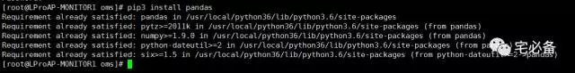
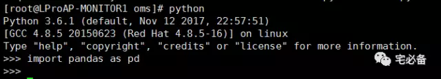
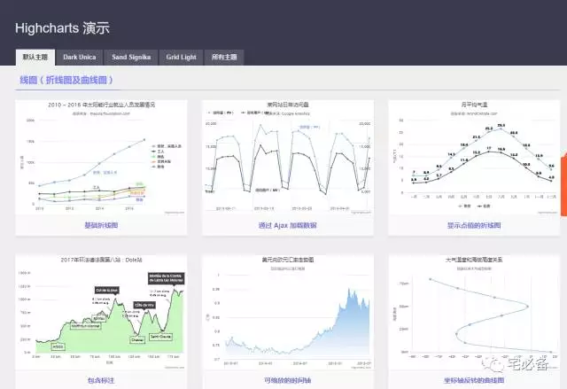
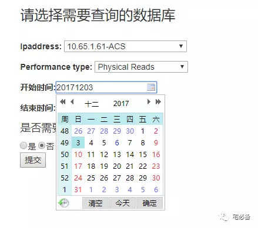

pandas和highcharts介绍
2017-12-06 Python 宅必备
前面介绍了如何利用Python搭建一个网站并且介绍了如何在其中执行Oracle命令并在前端显示出来
然后讲述自定义命令相关的知识
精彩内容可通过公众号自定义菜单查看也可直接查看我的网站
http://www.zhaibibei.cn/oms/1.1/
http://www.zhaibibei.cn/oms/2.1/
http://www.zhaibibei.cn/oms/3.1/
通过上面我们已经知道了如何使用Django获取数据库的信息
接下来我们说的是如何通过Django创建的网站来监控Oracle的TOP SQL
注意事项
前面的内容我使用的是CentOS 6.8+ Python 2.7 的环境
从这期开始已经改成了CentOS 7 +Python 3.6 的环境
关于如何迁移将在后面介绍
开发环境
操作系统:CentOS 7.4
Python版本 :3.6
Django版本: 1.10.5
操作系统用户:oms
数据处理:pandas
前端展示:highcharts
上节我们介绍了如何将Oracle TOP SQL数据存入数据库
接下来是如何将这些数据提取出来然后进行处理最后在前端展示
首先介绍几个相关的模块和框架
1.pandas
1.1 pandas介绍
pandas是一个基于Python的开源的BSD-licensed 的数据分析模块
他提供了新的数据结构(series,dataframe)来满足我们各种各样的需求，而我们就使用它来进行分析
官方网站为:
1.2 如何安装
我们可以使用pip3来安装pandas用于解决依赖问题
使用root用户
[root@LProAP-MONITOR1 oms]# pip3 install pandas

1.3 验证安装
如果import无报错表示pandas安装成功

1.4 如何学习
pandas功能非常强大，深入了解可参考官方文档或者相关书籍
书籍推荐利用Python进行数据分析
2. highcharts
2.1 highcharts介绍
highcharts可以将满足其要求的数据转化成各种图表(折线图,柱状图等)在前端显示

它的使用是免费的，但如果用于盈利需要商业授权
官方网站:
2.2 如何安装
我们可以在他的中文网站下载
https://www.hcharts.cn/download
下载完成后放在django配置文件的static_root变量的目录下
vim mysite/mysite/settings.py
STATIC_ROOT = '/home/oms/mysite/monitor/static'
然后在template模板中引用
<script src="/static/highcharts/js/highcharts.js"></script>
也可直接使用我github上面的
3.时间控件
这里我们使用My97DatePicker 来提供时间选择功能

官网网址:
和highcharts一样我们将其下载下来放在static_root目录下并在template中引用
<script type="text/javascript" src="/static/My97DatePicker/WdatePicker.js"></script>
这些可直接使用我github上面的
好了，前端展示的前置工具就介绍到这，下节讲如何利用他们。